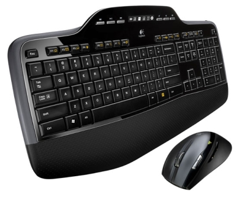
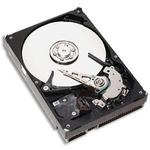
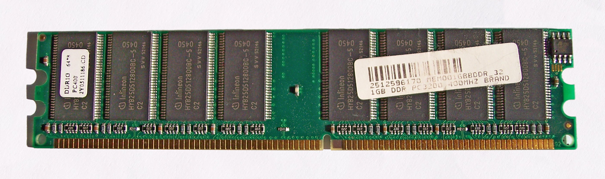
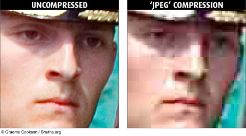
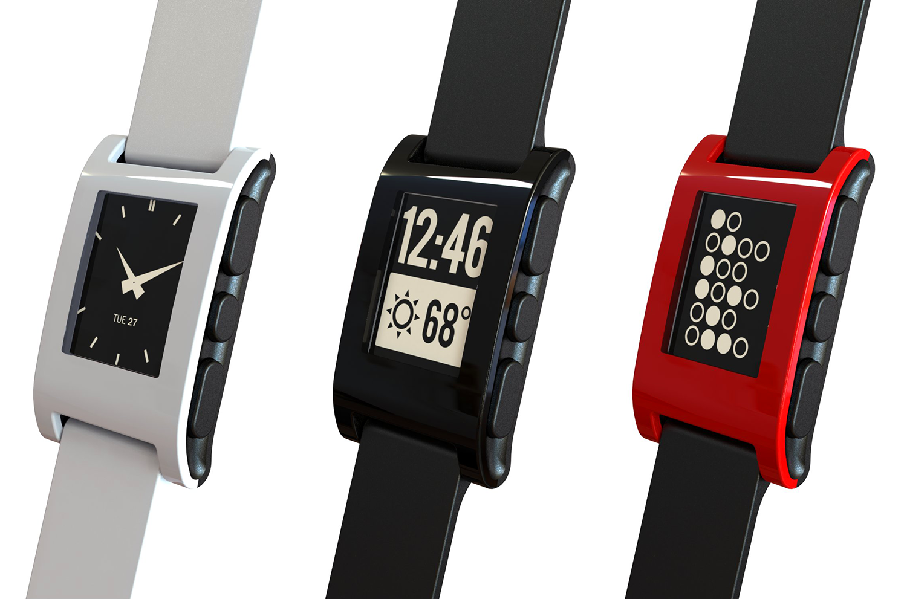
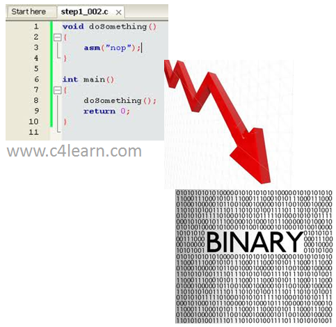
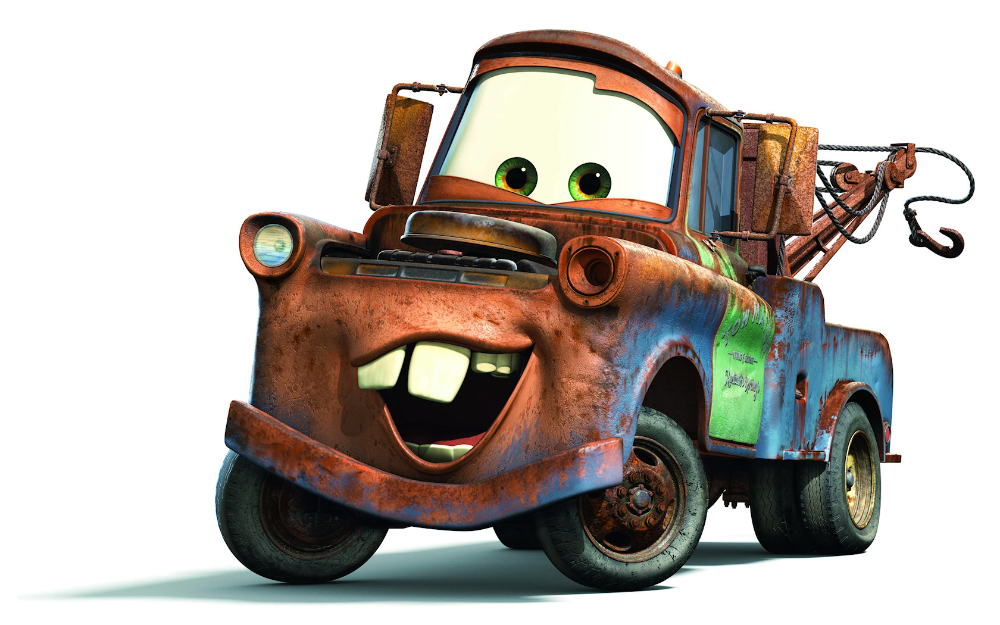
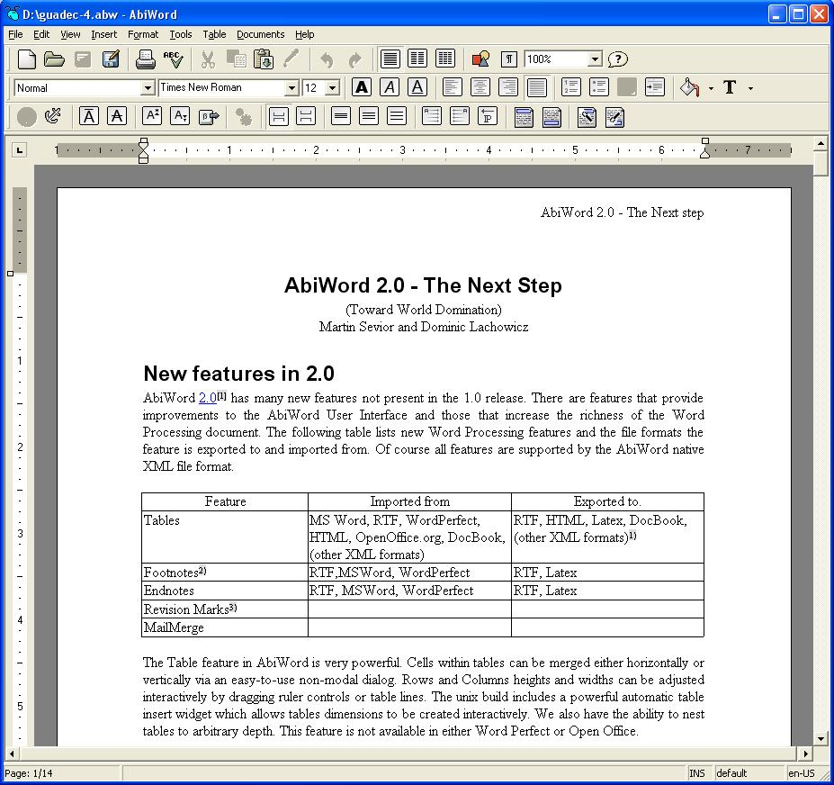
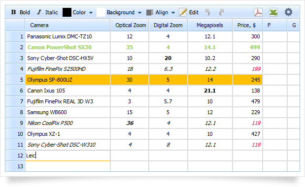
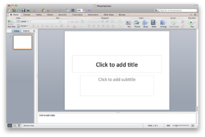

Computers - Day 1
Brady Isom
bradyisom@gmail.com
Overview
-
Day 1 (today)
- Requirements 3, 4 & 5
-
Homework
- Requirements 6 & 7
-
Day 2 (in 2 weeks)
- Requirements 1, 2, 8 & 9
Slides are online at http://bradyisom.github.io/computermb-slides
Workbook is available at http://meritbadge.org/wiki/images/3/34/Computers.pdf
Pencils Ready?
Requirement #3a
Describe four uses of computers outside the home.
-
 Mobile Phones
Mobile Phones
-
 Cars and Other Vehicles
Cars and Other Vehicles
- Satellites and Spaceships
- Digital Signs and Billboards
Requirement #3b
Describe three ways you and your family could use a personal computer other than for games and entertainment.
- Homework
- Budgeting and Financial Management
- Sending Emails and Other Communication
Requirement #4a
Explain the five major parts of a computer.
-

Input
- Keyboard, mouse, network (Internet), etc.
-
Output
- Screen, printer, speakers, etc.
Requirement #4a (cont.)
-
Processor
- Brains or calculator of the computer
-

Storage
- Like a big file cabinet that stores files, programs, etc.
- Permanent
-

Memory
- Like the serving counter
- Processor, input and output use data from memory
- NOT permanent
Requirement #4b
Explain how text, sound, pictures, and video files are stored in a computer's memory.
-
 Computers only store 1's and 0's. Like a switch that's either on or off.
Computers only store 1's and 0's. Like a switch that's either on or off.
- Text documents, videos and pictures all have different patterns.
- You need a program that understands a file format (pattern) for it to be useful.
Requirement #4c
Explain how file compression works and how compression affects the quality of the file.
- Compression squeezes files to make them smaller for downloading or sending.
- Example: RBBBBBBBBBRRRBBR = R1B9R3B2R1
- Sometimes, to make files smaller, compression loses some of the data.

Requirement #4d
Describe two computer chip-based devices, and describe how they are "smarter" because of the chip and its program.
-

Watch / Pebble
- Text notifications
- Different watch faces
- Vibrating alarm
-
 Google Glass
Google Glass
- Takes pictures/videos
- Maps, texts, searches, etc.
Requirement #5a
Explain what a program or software application is and how it is developed.
- A program is a special kind of file that the computer, or operating system, knows how to run.
-

Because computers only know about 1's and 0's, we need a way to translate something that we can understand into the computer's "language".
A programming language gets translated, or compiled, into binary.
saveFile('MyFile.jpg') -> 10001110101010011010 -

"Computers is so duuumb!"
- They do EXACTLY what you tell them to do
- Example: this presentation
Requirement #5b
Name three programming languages, and describe their uses.
There are many different programming languages, just like there are many different spoken languages.
-
JavaScript, HTML, CSS
- Used primarily for programming websites
- Example: this presentation
-
C, C++, C#
- Multi-purpose
- Used for programming devices and scientific programs
-
Java
- Multi-purpose
- Used for programming web sites, desktop applications, etc.
Requirement #5c
Name four software packages you or your family could use, and explain how you would use them.
-

Word Processor
- Word, Pages
- Used to write documents, papers, letters, etc.
-

Spreadsheet
- Excel, Numbers
- Used to do calculations, make budgets, etc.
Requirement #5c (cont.)
-

Presentation Software
- PowerPoint, Keynote
- Used to make slideshows and presentations
-

Browser
- Chrome, Internet Explorer, Firefox, Safari
- Used to browse the Internet, download files, etc.
Requirement #5d
Discuss ways you can help protect a computer from viruses and how to protect the information stored on a computer.

- Install anti-virus software (just one good one).
- Do not click on suspicious links or download suspicious files.
- Have a password on your computer and only give it to trusted family members.
- Have a password and firewall on your home network.
Requirement #5e
Describe how computers are linked to generate and access the Internet and the World Wide Web.
- The Internet is a bunch of computers that talk to each other.
- Each computer knows how to talk to a few others.
- It's like mail getting forwarded to other addresses.
Homework
Requirement #6 - Do THREE of the following
- Using a spreadsheet program, develop a food budget for a patrol weekend campout. (EXCEL, NUMBERS, OPENOFFICE)
- Using a word processor, write a letter to the parents of your troop's Scouts inviting them to a court of honor. (Word, Pages, OpenOffice)
- Using a computer graphics program, design and draw a campsite plan for your troop. (PAINT, PHOTOSHOP)
- Using a computer graphics program, create a flier for an upcoming troop event, incorporating both text and some type of visual such as a photograph or illustration. (PAINT, PHOTOSHOP, WORD, PAGES, OPENOFFICE)
- Using an Internet search engine (with your parent's permission), find ideas about how to conduct a troop court of honor or campfire program. Print out a copy of the ideas from at least three different Web sites. Share what you found with your counselor, and explain how you used the search engine to find this information. (GOOGLE, BING)
Requirement #6 (cont.)
- Using a presentation software program of your choice, develop a report about a topic that has been approved by your counselor. For your presentation, create at least 10 slides. (POWERPOINT, KEYNOTE)
- Using a digital camera, take a picture of a troop activity. Transfer the picture file to a computer and use photographic software to make it small enough to send easily as an e-mail attachment. Then, using a computer connected to the Internet (with your parent's permission), send an e-mail to someone you know. In your message, include the photograph as an attachment. Verify that the person received your e-mail and was able to view the attachment. (EMAIL)
- Using a database manager, create a troop roster that includes the name, rank, patrol, and telephone number of each Scout. Show your counselor that you can sort the register by each of the following categories: rank, patrol, and alphabetically by name. (ACCESS)
Requirement #7 - Do ONE of the following
- Using a database program of your choice, create a troop roster that includes the name, rank, patrol, and telephone number of each Scout. Create a form within the database manager to access each Scout's information individually. Show your counselor how the form works. (ACCESS)
- Using a software package of your choice for computer aided design (CAD), create an engineering-style drawing of a simple object. Include the top, bottom, and at least one side view and the dimensions. (Search for this one online)
- Create a blog and use it as an online journal of your Scouting activities, including group discussions and meetings, campouts, and other events. Your blog should have at least five entries and two photographs or illustrations. You need not post the blog to the Internet, but you will need to share it with your counselor. If you decide to go live with your blog, you must first share it with your parents AND counselor and get their approval. (WORDPRESS, BLOGGER)
Requirement #7 (cont.)
- Create a Web page for your troop, patrol, school, or place of worship. Include at least three articles and two photographs or illustrations. Your Web page should have at least one link to a Web site that would be of interest to your audience. You need not post the page to the Internet. However, if you decide to do so, you must first share it with your parents AND counselor and get their approval. (NOTEPAD, BROWSER, www.w3schools.com)
- Visit a business or an industrial plant that uses computers. Observe what tasks the computers accomplish, and be prepared to discuss what you have learned.
Computers - Day 1
Brady Isom
bradyisom@gmail.com
/